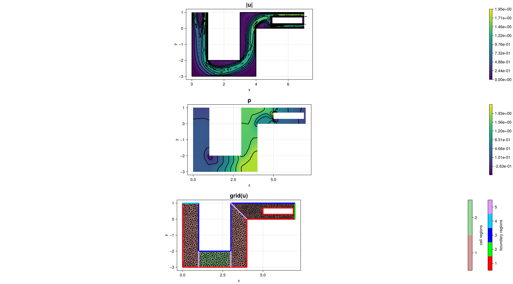

266 : Periodic Navier–Stokes
This example solves the incompressible Navier–Stokes equations with periodic boundary conditions between inlet and outlet, and no-slip boundary conditions on the other walls. The equations seek a velocity $\mathbf{u}$ and a pressure $p$ such that
\[\begin{aligned} - \mu \Delta \mathbf{u} + (\mathbf{u} \cdot \nabla) \mathbf{u} + \nabla p & = \mathbf{f}\\ \mathrm{div}(\mathbf{u}) & = 0 \end{aligned}\]
''On the divergence constraint in mixed finite element methods for incompressible flows'',
V. John, A. Linke, C. Merdon, M. Neilan and L. Rebholz,
SIAM Review 59(3) (2017),
>Link<
The solution is computed via Taylor–Hood elements. For the default parameters the result looks like this:

module Example266_PeriodicNavierStokes
using ExtendableFEM
using ExtendableFEMBase
using ExtendableGrids
using SimplexGridFactory
using Triangulate
using UnicodePlots; import Term
# kernel for the nonlinear Navier--Stokes operator
# residuals: [convection, Stokes x, Stokes y, divergence]
function kernel_nonlinear!(result, u_ops, qpinfo)
u, ∇u, p = view(u_ops, 1:2), view(u_ops, 3:6), view(u_ops, 7)
μ = qpinfo.params[1]
result[1] = dot(u, view(∇u, 1:2))
result[2] = dot(u, view(∇u, 3:4))
result[3] = μ * ∇u[1] - p[1]
result[4] = μ * ∇u[2]
result[5] = μ * ∇u[3]
result[6] = μ * ∇u[4] - p[1]
result[7] = -(∇u[1] + ∇u[4])
return nothing
end
# source term: horizontal body force
function f_body!(result, qpinfo)
result[1] = 1.0
result[2] = 0.0
return nothing
end
# everything is wrapped in a main function
function main(;
maxvol = 1.0e-2,
Plotter = UnicodePlots,
μ = 3.0e-3,
periodic = true,
nrefs = 0,
kwargs...
)
# load mesh and refine
xgrid = uniform_refine(
simplexgrid(
Triangulate;
points = [0 1; 0 -3; 1 -3; 3 -3; 4 -3; 4 0; 7 0; 7 1; 3 1; 3 -2; 1 -2; 1 1; 5 0.3; 6.9 0.3; 6.9 0.7; 5 0.7]',
bfaces = [1 2; 2 3; 3 4; 4 5; 5 6; 6 7; 7 8; 8 9; 9 10; 10 11; 11 12; 12 1; 3 11; 4 10; 13 14; 14 15; 15 16; 16 13; 6 9]',
bfaceregions = [1; 1; 1; 1; 1; 1; 2; 3; 3; 3; 3; 4; 5; 5; 1; 1; 1; 1; 5],
regionpoints = [0.5 0.5; 2.0 -2.5; 3.5 -2.5; 6.99 0.5; 6.5 0.5]',
regionnumbers = [1, 2, 1, 1, 0],
regionvolumes = [1, 1, 1, 0.5, 0] * maxvol
),
nrefs
)
# define unknowns
u = Unknown("u"; name = "velocity", dim = 2)
p = Unknown("p"; name = "pressure", dim = 1)
# problem description
PD = ProblemDescription("Periodic Navier--Stokes problem")
assign_unknown!(PD, u)
assign_unknown!(PD, p)
# nonlinear Navier--Stokes operator (includes convection + Stokes + continuity)
assign_operator!(
PD, NonlinearOperator(
kernel_nonlinear!, [id(u), grad(u), id(p)];
params = [μ], kwargs...
)
)
# body force in the x-direction
assign_operator!(PD, LinearOperator(f_body!, [id(u)]; regions = [2], kwargs...))
function target2source!(y, x)
y[1] = 7.0
y[2] = x[1]
return nothing
end
function post_mutation!(result, input, qpinfo)
result[1] = input[2]
result[2] = -input[1]
return result
end
# periodic coupling
periodic && assign_restriction!(
PD, CoupledDofsRestriction(
u, 2, 4;
target2source!,
post_mutation!
)
)
# no-slip on top and bottom walls
assign_operator!(PD, HomogeneousBoundaryData(u; regions = [1, 3], kwargs...))
# fix one pressure dof
assign_operator!(PD, FixDofs(p; dofs = [1], vals = [0]))
# generate FESpaces and solution vector
FES = [FESpace{H1P2{2, 2}}(xgrid), FESpace{H1P1{1}}(xgrid)]
sol = ExtendableFEM.solve(PD, FES, damping = 0.5, maxiterations = 5) # start with damping
sol = ExtendableFEM.solve(PD, FES, init = sol, maxiterations = 100)
# plot
plt = plot([id(u), id(p), grid(u)], sol; Plotter = Plotter, ncols = 1, rasterpoints = 1000, width = 1800, height = 1000)
test_points = [
([7.0, 0.15], [0.15, 1.0]),
([7.0, 0.5], [0.5, 1.0]),
([7.0, 0.85], [0.85, 1.0]),
]
PE = PointEvaluator([id(u)], sol)
err = 0.0
for points in test_points
y = zeros(2)
evaluate!(y, PE, points[1])
z = zeros(2)
post_mutation!(z, y, nothing)
evaluate!(y, PE, points[2])
err += norm(z - y)^2
end
return sol, plt, err
end
end # moduleThis page was generated using Literate.jl.